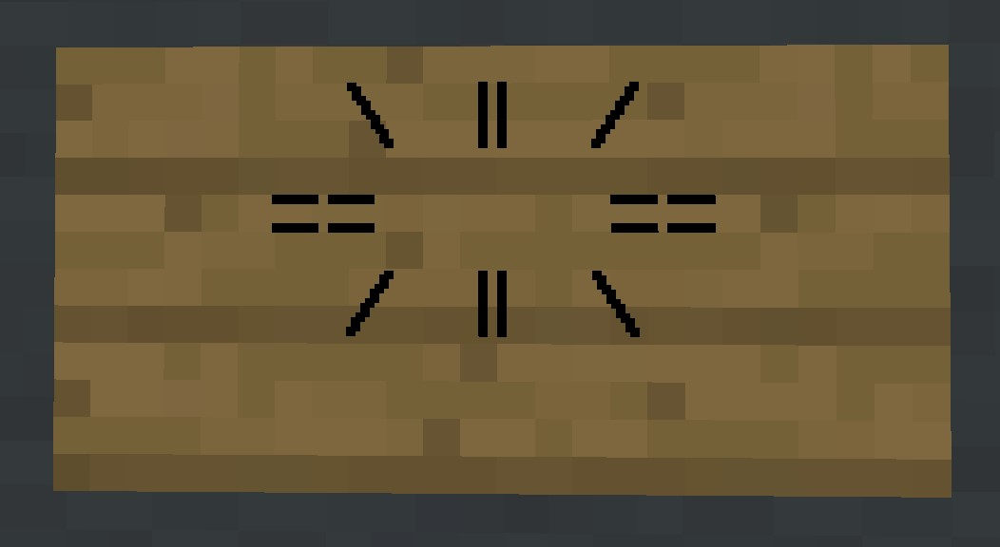
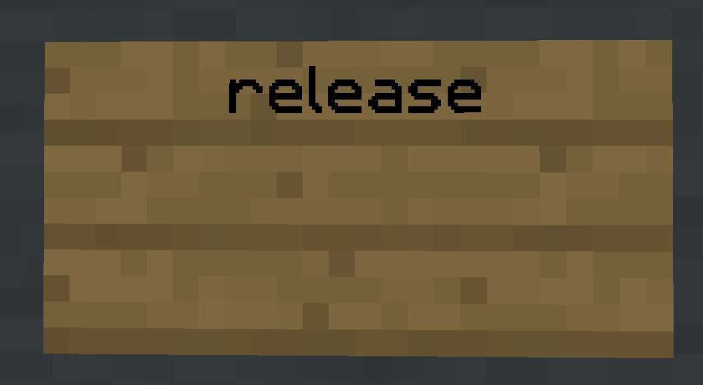

Controlling your ship
There are three main ways to control your ship: With a compass, 'Direct Control', and signs.
Compass control
This is the main way you will control your ship, and also arguably the simplest. All you need to do is grab a compass, pilot your ship, and right-click with your compass in the direction you want to go.
Gear control
Chat message for gearshift - cycling through gears 1, 2, 3
Changing gears allows you to go faster/slower, for instance at gear 1 you might move one block per action, but in gear 3 you could move 3 blocks per action.
To change gears, with compass in hand hold shift and right-click, this will cycle through however many gears your craft has available, different ships will have different gears available.
Direct control
Chat messages for entering and leaving direct control
Direct control allows you to move your ship like you would the player, for instance to go 'foward' you just press w, (or whatever you have 'walk foward' bound to) And to go down hold shift/crouch. However to go 'up' you must right-click with your compass.
To enter Direct control you just left-click with your compass, to exit, do the same.
Signs
Signs are the one necessary control method, even if you don't have a compass, you can still move using signs alone, (I discovered this the hard way) below are the different signs and what they do.
Pilot signs
A pilot sign for a starfighter, literally just a sign with starfighter on it.
The most important sign of them all, allowing you to actually pilot your craft.
to make a pilot sign you just need to write the name of the craft on the top line of a sign. And then right-click it to pilot your craft.
If, for whatever reason the pilot sign isn't working you can always take control of your ship by writing
A list of all craft types along with their stats can be found here
Helm sign
Another important sign, and the only one that can't be replicated with commands, the helm sign allows you to turn your craft, right-click (Or whatever you have 'Use item/Place block' bound to) the sign to go right and left-click (Attack/Destroy) the sign to go left.
To make a helm place a sign and write
Cruise signs
A cruise sign in it's 'off' state
Cruise signs, while not a necessary addition to your ship, are very useful for long journeys. When you
right-click a cruise sign your piloted ship will automatically move in the direction the sign
is facing,
you can also create ascend or descend signs that have the same effect but move your craft up or down
respectively, to make a cruise sign write
Release signs
Normally to release your ship you just enter
To create a release sign just write
Pilot: signs
A pilot sign with animalchaser on the second line, thus preventing any player who isn't animalchaser from piloting the craft
It is important to note that Pilot: signs are very different to what I refer to as 'Pilot' signs, where Pilot signs let you pilot your craft, Pilot: signs are a security measure, preventing other players from piloting the ship they are placed on.
To create a Pilot: sign just write
More players can be added to the sign with the